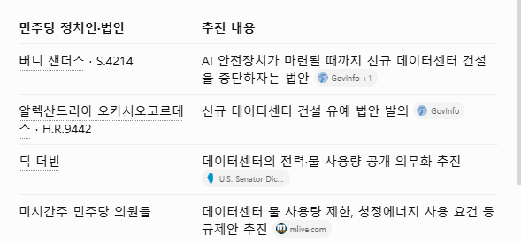

중간선거가 11월3일에 치뤄지는데
하원은 민주당 압승이고 상원은 지금 초경합중인데 상원까지 먹히면
트럼프 정부는 식물정부가 되는거고 민주당 정부로 탈바꿈함
이게 왜 문제냐면 민주당은 ai가 안전성이 확실하게 보장될때까지 규제해야된다고 주장하고
데이터센터도 규제해야된다고 말하고있고 실제로 법안도 입법한 상태임
민주당 집권은 삼하닉에게 초악재임

중간선거가 11월3일에 치뤄지는데
하원은 민주당 압승이고 상원은 지금 초경합중인데 상원까지 먹히면
트럼프 정부는 식물정부가 되는거고 민주당 정부로 탈바꿈함
이게 왜 문제냐면 민주당은 ai가 안전성이 확실하게 보장될때까지 규제해야된다고 주장하고
데이터센터도 규제해야된다고 말하고있고 실제로 법안도 입법한 상태임
민주당 집권은 삼하닉에게 초악재임
그럴리가 없지 ㅋㅋㅋㅋ 만약에 정부 차원에서 속도조절론 내세우는 순간 빅테크들 다 해외로 도망갈텐데.
초악재 맞고 그게 선반영 된걸지도 모르지
AI기업 수장들이 규제론에 앞장서는 이유를 생각해보면
이새끼들도 훗날 법적 처벌같은거 선제적으로 막기위한 포석이라고 봄
어차피 데이터센터도 더 짓기엔 전력 부족에다 칩도 존나 비싸고 민심도 안좋고
언젠가 투자 효용이 낮아지는 변곡점이 오는데 그게 중간선거 때문에 더 빨라질 예정이지
민주당 공화당 트좆 오바마 일론 올트먼 아모데이 잘못(X)
미국(+한국)이 언젠가 겪어야할 필연적인 성장통(O)
그러면 내가 존버말고 뭘할수있는데!!!
그 민주당에게 가장 많은 후원을 하는 기업들이 ai기업들임
이거보고 사기로 했다
그럼 숏쳐
근데 ai가 ㄹㅇ 인류 기술의 초도약. 퀀텀점프의 시작인데 규제한다고 되긴함??
저번주에 이미 바닥찍어서 반영다된거임
민주당뿌셔 ㅠㅠ
이것보다 트럼프 관세랑 전쟁땜에 물가오르고 인플레와서 금리 오르는게 더 무서움. 걍 트럼프꺼지는게 주가에 도움될듯
그럼 숏쳐 ㅋㅋㅋㅋㅋㅋ 니가 아는 악재는 이미 반영됨 니만 알고 시장은 몰라야 가격예측에 도움이 되는거고